Inhalt Index DeskTop Bronstein

 Differentialgleichungen Partielle Differentialgleichungen Lineare partielle Differentialgleichungen 2. Ordnung Integrationsmethoden für lineare partielle Differentialgleichungen 2. Ordnung
Differentialgleichungen Partielle Differentialgleichungen Lineare partielle Differentialgleichungen 2. Ordnung Integrationsmethoden für lineare partielle Differentialgleichungen 2. Ordnung


Telegraphengleichung nennt man die lineare partielle Differentialgleichung 2. Ordnung vom hyperbolischen Typ
mit den Konstanten 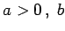 und 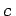, die das Fließen des elektrischen Stromes in Leitungen beschreibt. Sie stellt eine Verallgemeinerung der Saitenschwingungsgleichung dar.
Die unbekannte Funktion u(x,t) wird durch die Substitution u =ze-(b/a)t ersetzt, so daß (9.96a) übergeht in
| 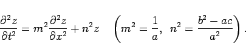 | (9.96b) |
Durch die Substitutionen der unabhängigen Variablen
| 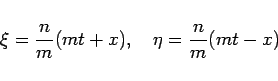 | (9.96c) |
erhält man schließlich die Normalform
| 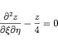 | (9.96d) |
der linearen partiellen Differentialgleichung vom hyperbolischen Typ.
Dieser Differentialgleichung muß die RIEMANNsche Funktion 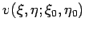 genügen und für 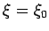 sowie 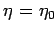 den Wert Eins annehmen. Wenn in v = f(w) für w die Gestalt
| 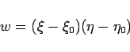 | (9.96e) |
gewählt wird, dann ist f(w) eine Lösung der Differentialgleichung
| 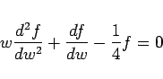 | (9.96f) |
mit der Anfangsbedingung 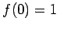. Die Substitution 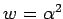 überführt diese Differentialgleichung in die BESSELsche Differentialgleichung nullter Ordnung
| 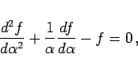 | (9.96g) |
so daß die Lösung lautet
| 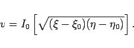 | (9.96h) |
Eine Lösung der ursprünglichen Differentialgleichung (9.96a) mit den Anfangsbedingungen
| 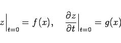 | (9.96i) |
kann erhalten werden, indem man den gefundenen Wert von v in die RIEMANNsche Formel einsetzt und zu den ursprünglichen Variablen zurückkehrt:
| 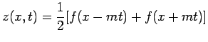 | |||
| 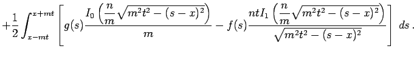 | (9.96j) |